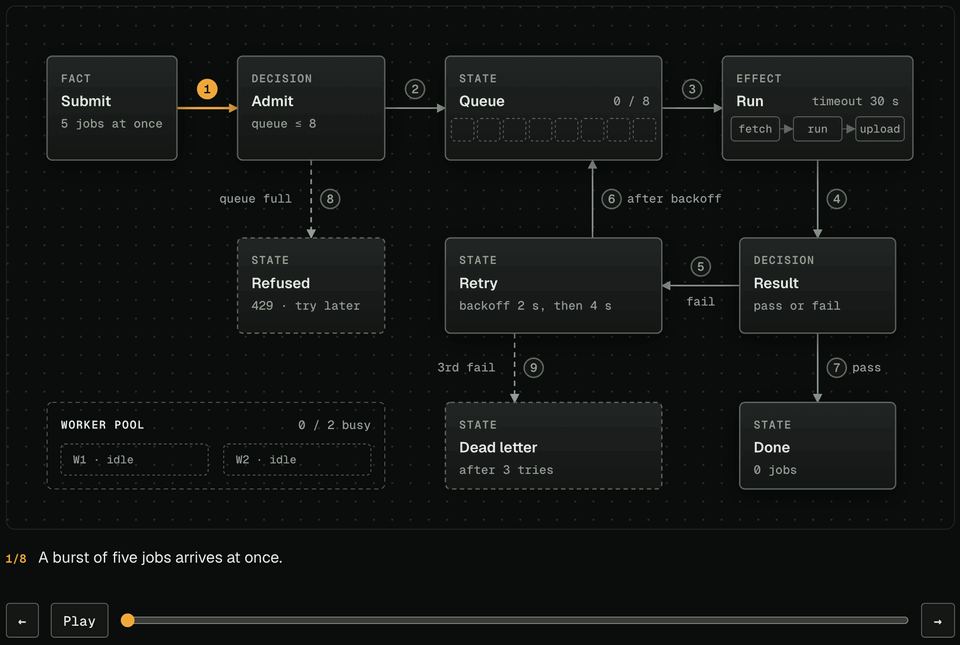

Learning Playground · Tool guide
Visual Explainer
Build an explanation that a reader can step through, measure, and replay. Our example uses three figures to connect the arithmetic of one attention row to the memory cost of a long sequence.
Read one row, then change a factor
- Play the attention row. Open Read one row and press Play. Step back with the left arrow or drag the step control to pause at the weights. A query of 1 gives scores 0 and ln(3). Exponentiating and normalizing gives ¼ and ¾.
- Predict the output. Before opening the zero-query answer, predict what happens to the same values, 2 and 10. The original weighted sum is 8. A zero query makes the two scores equal and the output becomes 6. The diagram’s captions explain each step.
- Use the same scale. Move to Count the heads. Read the 8-head bar in both plots. At 4,096 tokens it is 512 MiB, and at 8,192 it reaches 1,024 MiB. The shared 4,096 MiB axis lets the bar lengths show this change directly.
- Rebuild the packed entry. In Count the bytes, add the 288-byte main vector and the 68-byte index key. Multiply the 356-byte entry by 2.5 stored entries per token. Explain why reading a fixed number of entries per query does not determine the amount stored.
What to ask the agent to draw
- Mechanisms over time
- A step player coordinates captions and highlighted elements. State-machine figures can replay individual transitions so a reader can stop when an event takes an unexpected route.
- Quantitative comparisons
- Chart tags describe values, units and limits in text. Bars suit comparisons across settings. A stack shows how parts contribute to a total. A shared maximum matters when a reader compares two charts by eye.
- Other formats
- The repository includes slide generation, comparison and review commands, and optional PowerPoint and video utilities. HTML is the primary output for the page workflow. Video needs additional browser and media tooling.

Where the figures come from
Question and data Agent-authored HTML source Node renderer Embedded graphics and controls
The host agent picks a representation, writes the explanation, and enters the data. The source marks its kit stylesheet with data-ve-kit. It can describe connected nodes using <ve-flow>, comparisons with <ve-bars>, and component sizes with <ve-stack>. These declarations remain editable in a small source file.
The Node renderer parses the source, expands supported figure tags and inlines the kit’s styles, SVG definitions and behavior. Its report counts figures, data tags and flows. Rendering the same source needs no model. Its checks can catch invalid chart markup, but the author must verify input values and the meaning of a label. Renderer · Flow implementation.
Render the page again
Use Git and a modern Node.js runtime in a playground checkout. The trial used Node.js 25.8.1. Copy the editable source to a fresh directory so that the existing trial stays available for comparison.
./install.sh visual-explainer
skill=.local/tools/visual-explainer/source/plugins/visual-explainer
run=topics/how-transformers-remember/cases/one-more-token/runs/2026-11-24-visual-explainer
tmp=$(mktemp -d)
cp "$run/one-more-token.src.html" "$tmp/"
node "$skill/kit/render.mjs" "$tmp/one-more-token.src.html"
echo "$tmp/one-more-token.html"Open the printed HTML and press Play. The expected report contains three figures, three data tags and one flow. The copied figure works on its own. Its relative links to the playground notes are intended for the published trial directory. To study a different mechanism, give your agent the diagram-generation command and specify a question, concrete inputs, and one prediction a reader should make. Diagram authoring command.
What produced the lesson
On November 24, 2026, Codex followed the release 0.15.0 instructions to author the attention replay, two bar charts on the same scale, and the packed-entry figure. The agent supplied the text, chart data, and prediction checks from the shared case. The upstream renderer transformed the editable source into its browser-ready edition.
Safari displayed the controls, answer reveal and final calculation. The automated layout checker could not launch a headless browser in the trial environment. The generated file can be opened from disk and falls back to local fonts when Google Fonts is unavailable. Slide, video, review and other host workflows remain untested here.
Learner feedback is pending. The open question is which figure helped more with an independent explanation of attention or memory. Trial record.